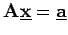

Inhalt Index DeskTop Bronstein

 Lineare Algebra Lineare Gleichungssysteme Lösung linearer Gleichungssysteme
Lineare Algebra Lineare Gleichungssysteme Lösung linearer Gleichungssysteme


Zur Lösung des linearen Gleichungssystems  (4.107a) von m Gleichungen mit n Unbekannten kann das GAUSSsche Eliminationsprinzip angewendet werden.